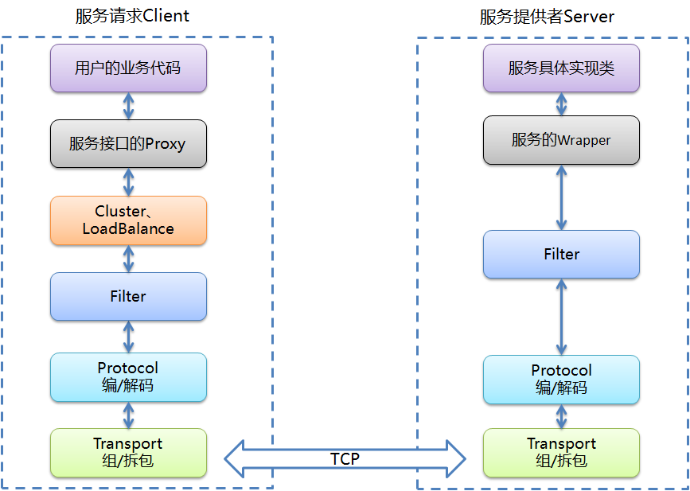

mars概述
(Mars：火星)Mars定位在实用、透明化的轻量级远过程调用(RPC)。设计功能包括：
- 像调用本地方法一样透明的调用远程方法，只需通过Spring简单配置就可完成，对应用或业务代码是完全透明的。
- 服务提供者的自动注册与发现，服务调用方不必事先配置服务提供方地址，注册中心能自动分发新增或删除的服务提供者信息。
- 提供服务的负载均衡、容错、HA等机制。
- 能对每笔服务调用的执行时间、成功与否等关键指标进行监控，以达到可运维。
- 提供高性能的服务调用。
- 服务提供者、消费者只支持java语言。
mars功能
应用或业务代码可以透明的调用远端服务
通过java的动态代理等机制，就可以让一个远端服务提供者‘隐藏’在一个接口类后面。同时，使用spring2以上版本提供的自定义标签功能，
用户就可以在现有spring配置文件中方便的使用Mars。通过这些方法，就可以让用户的代码没有任何改动，就能调用到远程的服务了。
提供服务的注册中心
采用zookeeper作为注册中心，服务提供者可以把服务发布到zookeeper上，同时zookeeper会把最新的服务提供者推给相关的消费者。
消费者通过这种机制可以自动的新增、删除服务提供者。
提供服务的负载均衡、容错、HA
服务消费者可以把同一个服务接口的多个提供者做一个集群，并提供灵活的负载均衡策略，如RoundRobin(轮循每个服务提供者)。
同时提供集群的容错策略，如提供Failover Cluster(失败自动切换，当出现失败，重试其它服务器)。同时也可以提供HA机制，
如Master-Slave方式，只有当Master失效后才向Slave发送服务请求。
监控服务的调用情况
系统是否可运维对生产系统来说是非常重要的一个方面，Mars可以记录每次服务调用的时间、次数，这样就可以捕获调用异常，
如服务调用在某个时间段比较慢。
提供高效、稳定的通讯功能
服务消费者和提供者之间采用Mars内部实现的一套自定义通讯框架，在保证性能的前提下提供心跳、失败重连等机制，
以应对各种复杂的网络环境。
mars设计
软件架构

服务请求Client和服务提供Server端它们之间采用TCP通讯。Mars的架构设计分成以下几层，我们按图从下往上依次介绍：
Transport：传输层。它定义数据的传输方式，目前采用Mars自己的传输格式，这一层的主要功能包括：心跳、重连、报文的拆/组包等。
Protocol：协议层，定义数据的传输格式，这一层的主要功能包括提供Json、Xml、Protobuf、java序列化bytes流等协议的编、解码。
(目前采用编写glowworm这个开源序列化包)
Filter：过滤层，它在服务消费方或提供方的职能是不一样的。
1、 服务消费方：主要提供监控的Filter。
2、 服务提供方：主要提供服务调用权限控制等Filter。
Cluster/ LoadBalance：集群层，这一层主要功能是为服务消费方提供集群等功能。
服务接口的Proxy和服务的Wrapper：
1、服务接口的Proxy：它作用在服务调用Client端，它采用动态代理机制并通过Spring注入到服务请求方的业务代码中，充当一个接口的现实。
这样业务代码在使用的时候根本不用知道它调用的是本地接口实现还是远程服务。
2、服务接口的Wrapper：它作用在服务提供者Server端，它的作用是把从协议层来的服务请求，转换成对具体服务实现类的调用。
用户的业务代码和服务具体实现类